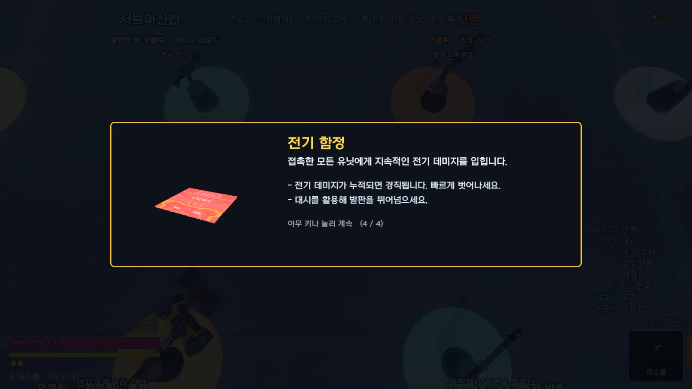
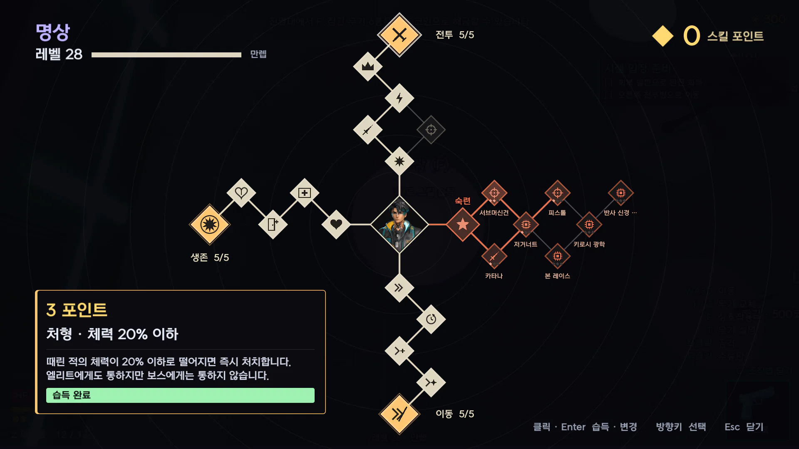
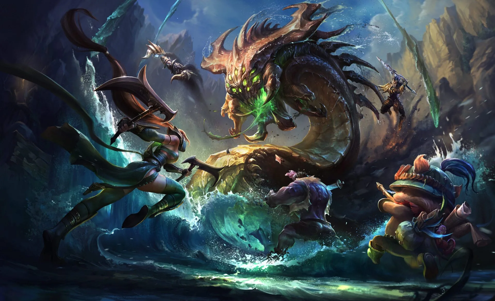
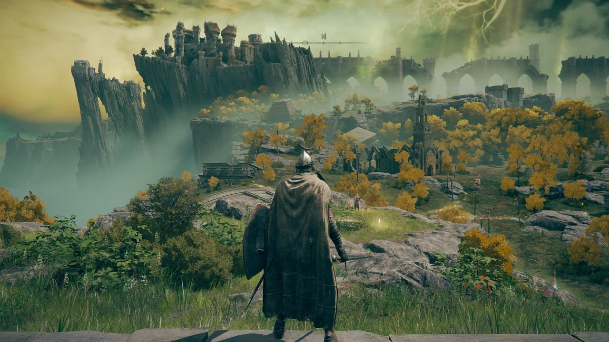
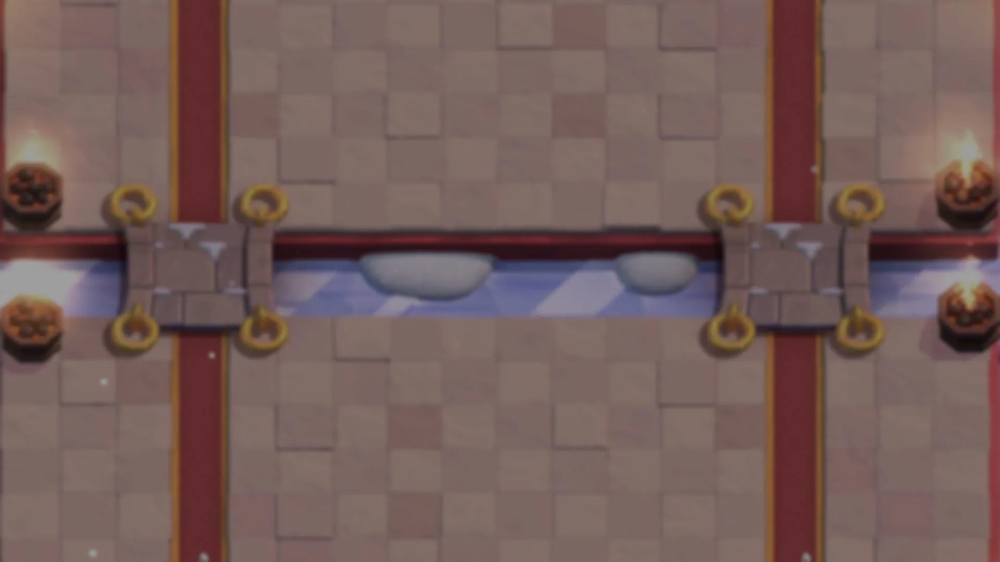

2026.08 – 10 · 1인 개발
Edgerunners
사이버펑크 2077을 탑다운 로그라이트로 재구성한 게임입니다.
몸에 심는 사이버웨어로 빌드를 짜고, 그 빌드로 몰려오는 적 무리를 한 번에 쓸어버립니다.
게임 기획 포트폴리오
레벨디자인을 지망하는 게임 기획자입니다.
지형과 배치, 수치로 플레이어의 다음 행동을 유도하는 레벨 설계에 관심이 있습니다.
출시작 역기획으로 설계 근거를 정리하고, 직접 만든 게임에서 그 원리를 적용하고 검증하며 성장하고 있습니다.
01 · 게임
62일 동안 혼자 기획하고 만든 탑다운 액션 로그라이트입니다. 브라우저에서 바로 플레이할 수 있습니다.
2026.08 – 10 · 1인 개발
사이버펑크 2077을 탑다운 로그라이트로 재구성한 게임입니다.
몸에 심는 사이버웨어로 빌드를 짜고, 그 빌드로 몰려오는 적 무리를 한 번에 쓸어버립니다.
02 · 기획 역량
Edgerunners를 만들며 내린 결정 중 네 가지입니다. 무엇을 의도했고, 플레이와 측정에서 무엇이 어긋났고, 어떻게 고쳤는지 정리했습니다.




03 · 역기획서
레벨과 시스템이 왜 그 배치와 그 수치인지, 설계 목표에서부터 다시 짚었습니다. 문제가 보이는 구간에는 보완 기획을 붙였습니다.

라인 · 정글 · 오브젝트 · 시야 배치가 공정성과 국면 전환을 만드는 구조.

설계 목표 기준의 미니언 골드 · 경험치 · 포탑 수치와 라인전 경제.

지도 · 밀도 · 시야 · 사정거리로 첫 보스까지 플레이어를 학습시키는 구조.

몬드성과 신상을 기준점으로 탐험 범위를 넓혀 가는 배치와 순환 구조.

고정 전장의 대칭, 다리 · 강, 엘릭서 비용에 따른 공격 · 방어 분화 구조.
04 · AI 활용
코드 · 에셋 · 문서는 AI와 함께 만들었고, 무엇을 만들지와 다 됐는지의 판단은 제가 맡았습니다.
두 컴퓨터와 두 AI(Claude Code · Codex)가 같은 규칙으로 이어 일하도록 인수인계 문서 두 개와 작업 규칙을 설계했습니다.
"수치만 보고 완료로 판단하지 않는다." AI의 보고 대신 렌더 화면과 일부러 실패시키는 검사로 결과를 확인했습니다.
맵 편집기와 밸런스 튜닝 패널처럼 기획자가 직접 반복 작업할 도구를 AI로 먼저 만들었습니다.